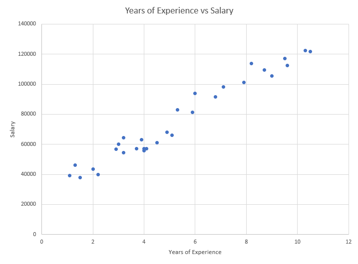
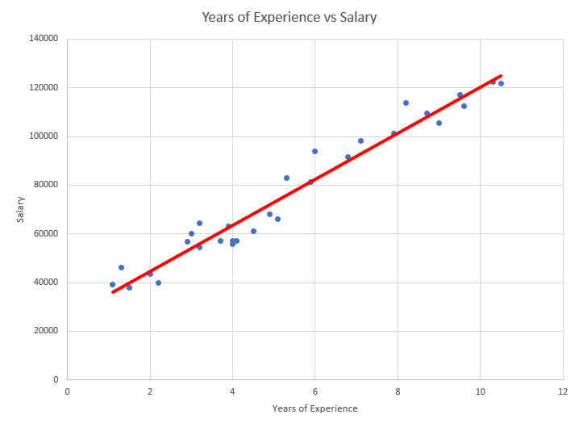
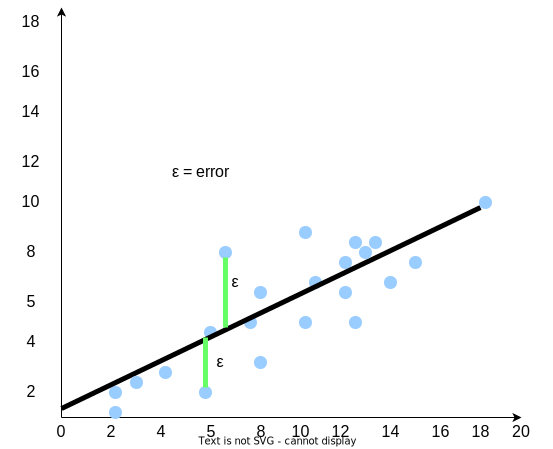

Simple Linear Regression
What is simple linear regression?
Simple linear regression aims to find a correlation between two variables and derive mathematical equations that explain the relationships between a dependent and an independent variable. With simple linear regression in general, we want to reach the conclusion:
-
Is there a relationship between the variables we have?
You can determine the relationship between income and spending, experience and salary, or humidity and temperature. But, as an example, there is NO relationship between the height of a student and their exam scores.
-
Can we forecast / predict values with this?
With regression, we can train the model and find out if we can predict values with certainty. Can we use what we know about the relationship to predict new values?
Example: What will be the temperature tomorrow? How much will my bakery sell this year compared to last year? How much will my salary be if I have 5 years of experience?
Variable roles
In simple linear regression, variables can take one of 2 roles.
-
Dependent Variable
The variable whose value we want to predict or forecast. We call it dependent because its value depends on something else. We will call this variable y.
-
Independent Variables
This is the variable which we can control or change in order to affect the dependent variable. We will call this variable x.
Example: If an apple costs $1.00, and you buy 10 of them the total cost will be $10.00. The dependent variable here is the
total costwhile the independent variable are the number of apples you want to buy.
The Simple Linear Equation Mathematical Model
When we use simple linear regression we call it linear because, well… the mathematical model represents a straight line in a 2D plane. Let’s think about it for a second.
What is the math equation for a straight line?
True World Examples
In the real world, data sometimes is not linear and behaves differently to what we think. At first glance, it may seem that data has no relation at all. In the case of simple linear regression what you need to look for is data that somewhat follows a linear pattern.
Suppose that you work as a Data Analyst for the human resources department of a company that has over 10,000 employees. Your boss wants to know if the years of experience of an employee has anything to do with the amount of money they win. Of course, since you are a Data Analyst you can check the database of employees and quickly verify the following:
- What is their current salary?
- How many years of experience does the person have?
Assume that you are able to get data from 30 random employees which looks something like this:
| Employee ID | Years of Experience | Salary |
|---|---|---|
| 1 | 1.1 | 39343 |
| 2 | 1.3 | 46205 |
| 3 | 1.5 | 37731 |
| 4 | 2.0 | 43525 |
| 5 | 2.2 | 39891 |
| 6 | 2.9 | 56642 |
| 7 | 3.0 | 60150 |
| 8 | 3.2 | 54445 |
| … | … | … |
| 26 | 9.0 | 105582 |
| 27 | 9.5 | 116969 |
| 28 | 9.6 | 112635 |
| 29 | 10.3 | 122391 |
| 30 | 10.5 | 121872 |
After you check the table, you plot all these values in a 2D scatter plot and get an image like so.
|  |
|---|
| Scatter Plot: Years of Experience vs Salary. |
As you can see, the dots somewhat resemble a line. Let’s go ahead and draw an imaginary line and see if we can pass through all the dots.
|  |
|---|
| Scatter Plot: Years of Experience vs Salary with line. |
As you can see the line doesn’t pass through ALL the dots, but it’s somewhat close. What does this mean? Why in some cases are the dots close or far away from our imaginary line?
So far we know that:
- The data in follows somewhat of a linear approach.
- The data has 2 important variables SALARY and YEARS OF EXPERIENCE. This means, that we can start to model our like a linear equation.
Question: We know that SALARY and YEARS OF EXPERIENCE are our variables but which one is the dependent and which one is the independent variable?
The Possibility of Errors
As we mentioned before, data may or may not be always consistent and can behave in different ways. What this means is that our linear equation needs to consider a possible error. But how do we represent that error in the equation? How can that error be visualized in the scatter plot?
Lets assume that all the employees that were chosen in the table above are from San Antonio, TX but the HR department accidentally added employees from the city of Seattle, WA into the data set you chose. The cost of living in Seattle is 28.6% higher than San Antonio . This would explain why, some data points in the plot, are farther away from the imaginary line we have traced. These are considered errors in our data.
|  |
|---|
| Error Lines for Simple Linear Regression |
In our linear equation, let’s add that error with the greek letter ε.
\[ SALARY = a(XP) + b + ε \]
ε is the possible error our data can have. What simple linear regression aims to do is to draw an imaginary line that minimizes this error between the data points. This error is a value that is often ignored but the important thing is that our linear equation will consider this and we can represent the linear equation in a way that is familiar to our example.
Exercise 1: Playing with Scikit-learn
Scikit-learn is a machine-learning library that will help us analyze and use the built-in simple linear regression model to predict data. In the Replit window below, you can run the program 02-e1.py which will use a data set of employees alongside their years of experience. The program will plot a sample of 30 employees out of the employees within the company:
Exercise 2: Finding the Slope and Intercept
Before we go any further, lets analyze our equation once again. We know that our equation has been updated like so:
\[ SALARY = a(XP) + b + ε \]
We have been able to determine what are the values of x and y but, what about a and b? Let us recall what each of the missing values mean:
- a is the slope or coefficient of the line. The slope represents the estimated change on the dependent variable, in this case, the SALARY.
- b is the intercept or the value of y when x=0. After plotting our data set, you can see that the value for the SALARY when the YEARS OF EXPERIENCE is 0.
Hold on for a second? If I join the company with no experience, my salary will be 0? That doesn’t sound right. Lets go ahead and figure out what is the actual value is.
Using scikit-learn we can use the linear regression model and find the value of a and b. On the Replit window below, lets analyze the code
First, we need to import the data from the CSV file:
# Importing dataset
dataset = pd.read_csv("Experience_vs_Salary.csv")
x = dataset.iloc[:, :-1].values # Get all the values from "Experience"
y = dataset.iloc[:, 1].values # Get all the values from "Salary"
Then we make an instance of the LinearRegression model class and fit the model to the data. The fit function will analyze the values from our CSV file and find the slope and intercept values.
model = linear_model.LinearRegression()
model.fit(x,y)
As you can see, the code has returned the value for the coefficient and intercept of our linear equation. Let’s update our linear equation with this.
\[ Intercept = 25792.20 \] \[ Coefficient= 9449.96 \] \[ SALARY = 9449.96(XP) + 25792.20 + ε \]
We know that the model gave us an intercept of 25792.20. What this means is that an employee with NO experience would have a salary of $25792.20. But what does the 9449.96 mean? This means that, for every year of experience, the salary of employees has an increase of 9449.96. But wait a moment, how can we make sure these are the correct values? Do we have confidence that these are indeed the correct values? If we grab another 30 random employees and verify their salaries, are we going to get the same values?